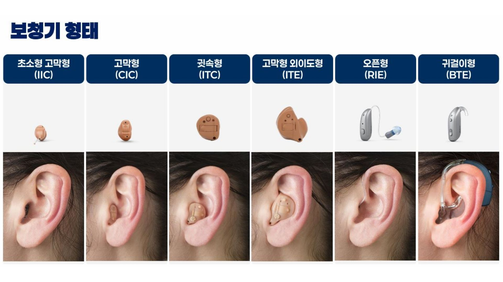

박진우보청기 청각전문그룹 스마트 상담 시스템
1. 귀의 구조와 소리 전달 경로
소리 전달의 이해
각 부위를 클릭하여 소리가 전달되는 원리를 확인해보세요.
2. 소리 전달 시뮬레이션 영상
3. 청력 분석 및 발음 왜곡 시뮬레이션
우측(○) 입력
좌측(✕) 입력
우측(R) 평균 (6분법)
20.0
dB
좌측(L) 평균 (6분법)
30.0
dB
🏠 조용한 방
☕ 카페 소음
🚗 도로 소음
👥 다자 회의
"아버지가 방에 들어가신다"
환경: 매우 선명하게 들리는 상태입니다.
어음 인지력 (WRS) 점수 설정
100
%
4. 보청기 형태 안내
